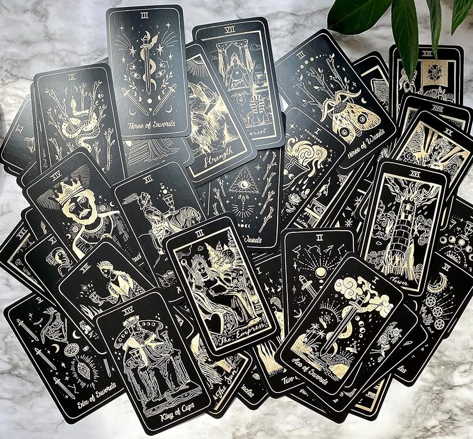

Lejos de las predicciones y el misticismo, aquí exploraremos los orígines del tarot como un ingenioso juego de cartas en las cortes del Renacimiento italiano. Conoce su evolución a través de los siglos y cómo ha dejado una profunda huella en la cultura, el arte y el pensamiento europeo. Prepárate para descubrir un legado de símbolos e historias que trascienden el tiempo, revelando la verdadera magia detrás de estas enigmáticas ilustraciones.